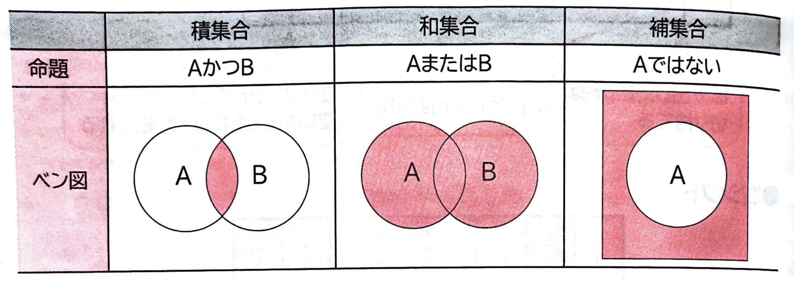
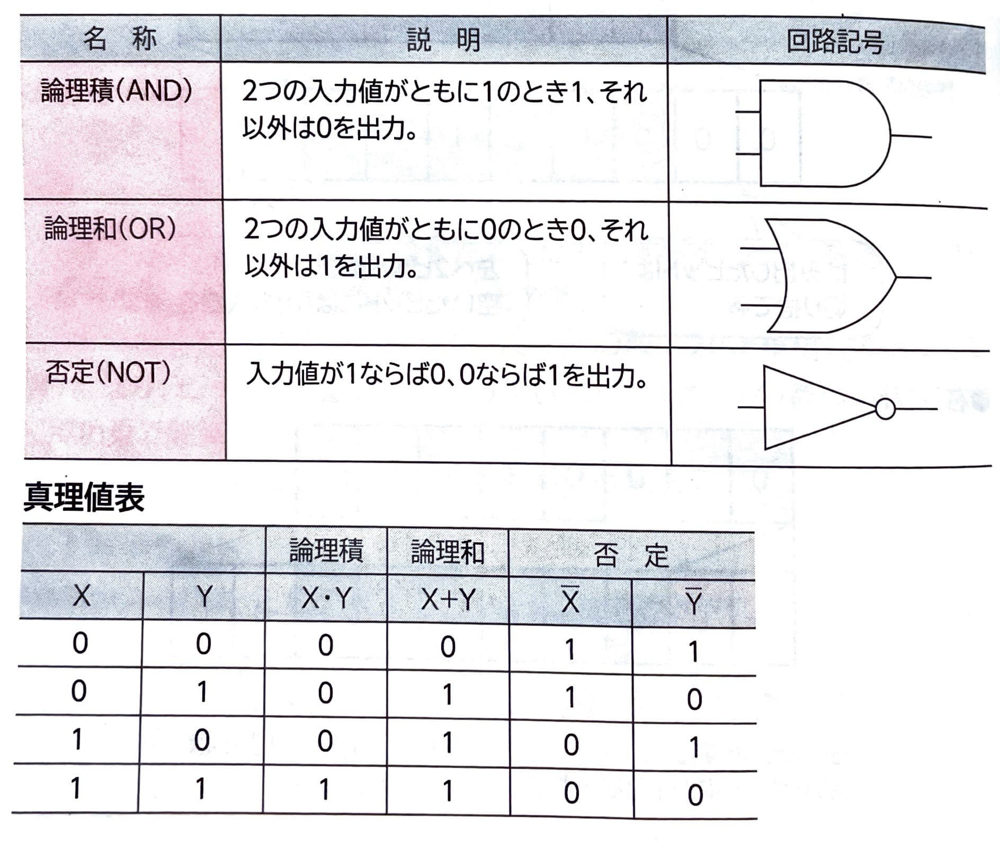
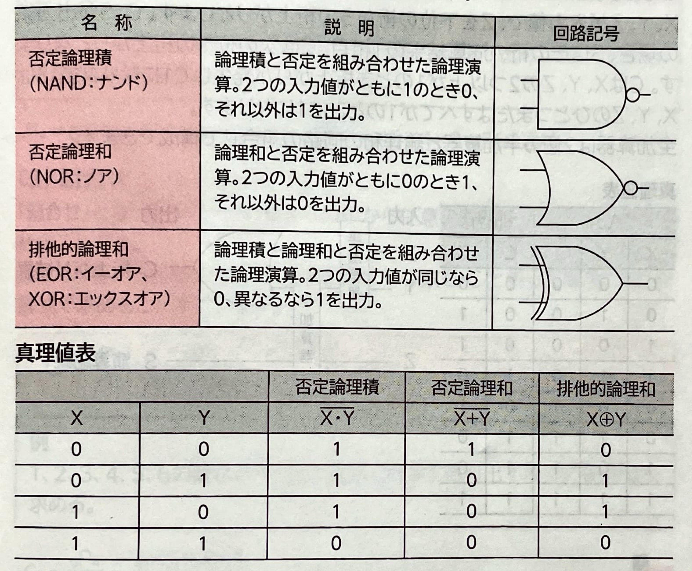
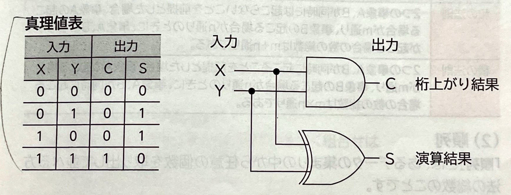
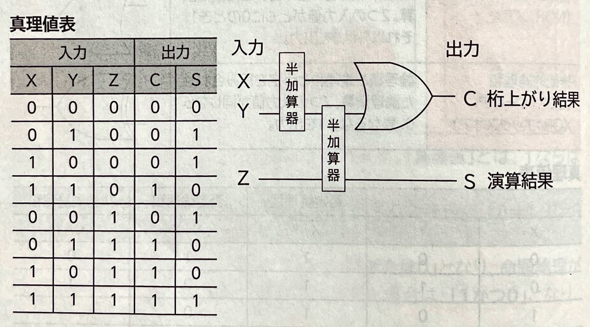

【 集合と論理演算 】
｢集合｣とは、ある明確な条件に基づきグループ化されたデータの集まりのことです。集合は｢AまたはB｣などの文章で表現できます。このような文章や条件式(論理式)を｢命題｣といいます。
代表的な集合は、次のような命題や｢ベン図｣で表現できます。

このベン図を解釈するには、｢真理値｣を求めます。｢真理値｣とは、1ならば｢真｣を、0ならば｢偽｣を意味します。
例えば、Aに含まれBに含まれないならば、それぞれの真理値はA=1、B=0となります。
これを、命題｢AまたはB｣に当てはめた場合、｢1または0｣となり、命題倫理が成立します。しかし、命題｢AかつB｣に当てはめた場合は、｢1かつ0｣となり、命題論理は成立しません。
(1)論理演算と論理回路
｢論理演算｣とは、複数の条件(論理)の組合わせを条件式で表したときの演算方法のことです。コンピュータ内部でも論理演算は行われ、論理演算を担当する電子回路を｢論理回路｣といいます。
論理回路は、｢回路記号｣を使って図で表現できます。回路記号は｢MIL(ミル)記号｣ともいいます。
●基本的な論理演算
基本的な論理演算には、次なようなものがあります。

●組合わせの論理演算
基本的な論理演算を組み合わせて演算を行うことができます。
論理演算の組み合わせには、次のようなものがあります。

(2)半加算器と全加算器
四則演算や論理演算を行う回路を｢演算回路｣といい、2進数の加算を行う演算回路を｢加算器｣といいます。
加算器には、｢半加算器｣と｢全加算器｣があります。
●半加算器
｢半加算器｣とは、2進数の加算で下位の桁から桁上がりを考慮しない加算器のことです。
X、Yが入力値で、C、Sが出力値の場合、Sはその桁の演算結果の1桁目、Cは次の位への桁上りとなります。CはX、Yがともに1のとき桁上りが発生して1になるので論理積に、SはX,Yがともに異なるとき1になるので排他的論理和になります。
したがって、全加算器は論理積と排他的論理和の回路の組み合わせで構成されます。

●全加算器
｢全加算器｣とは、2進数の加算で下位の桁からの桁上がりを含める加算器のことです。
X、Y、Zが入力値で、Zを下位の桁からの桁上がりとします。C、Sが出力値の場合、Sはその桁の演算結果の1桁目、Cは次の位への桁上がりとなります。CはX、Y、Zのひとつまたはすべてが1のときに1になります。
全加算器は2個の半加算器と論理和の回路の組合わせで構成できます。
